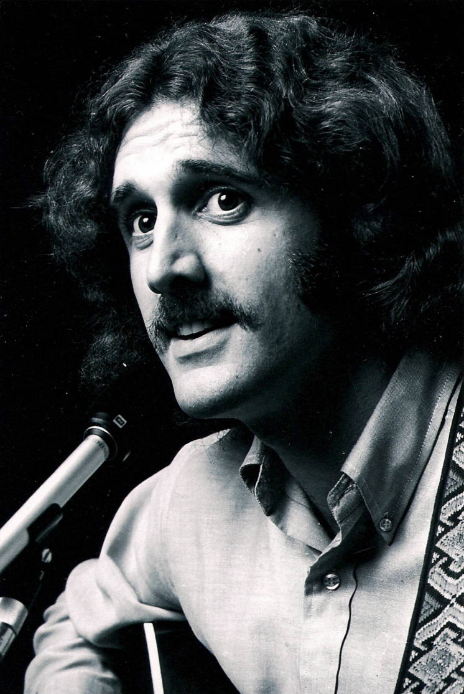

Biography
Known internationally for his work in many artistic genres as a songwriter,
recording artist, performer, author and photographer, EJ Bisiar is returning to
his musical roots in folk/rock, pop and country, after nearly three decades of
performing family/children's music as the "Original" Eddie Spaghetti
(see
www.EddieSpaghettiUSA.com). He is author of the children's book, "A
Visitor In The Dark", available through
Amazon.com and eBook available through
iTunes.
Looking back, the "Forest Gump" moments have been many… but a
few of note… Opening in late 1969 at the Fillmore Auditorium in San
Francisco for a band he was unfamiliar with at the time, called The Grateful
Dead… and one of his last photographic assignments, working for George
Lucas and Francis Ford Coppola at the Coppola Winery in the Napa Valley.
He was a member of the San Francisco music scene from 1968 thru 1975. During the
early 1970's he released three records. The late 70's early 80's found him in
Nashville working for a record company and the largest advertising agency in the
southeast US before heading to Colorado. He's known for his Valentine song
"Please Be My Valentine" which has been receiving more radio, television and
download attention each year around the world. It's light-hearted, quirky and
fun.

Working at Evergroove Studio with Brad Smalling (engineering) in Evergreen,
Colorado, EJ recorded "The Ice House Cafe", a song portrait of an
evening at Evergreen, Colorado's popular gathering place for musicians. "Summers
Wind" is a nostalgic laidback look back at life. "You're Not Gonna See
Me Anymore", a bit of rock that expands on the title. "All I Want(Is
To Love You)" is pretty simple, with just vocal, guitar, piano and cello
but with a hook that draws you in...tender but strong.
During 2015 and 2016 he worked with Evergreen and Denver's top musicians to
finish recording the cd/album, "Evergreen Trail", which made it's
worldwide debut on Valentine's Day 2017. Nationally recognized R&B singer Hazel
Miller contributed background vocals along with the horn section from Denver's
popular dance band, Wash Park to a rerecording of "Rainy, Rainy Day Blues".
The new release been getting good reviews from fans in such diverse parts of the
world as South Africa, Brazil, Japan, The Russian Federation, Israel, Australia,
The EU, Hong Kong and Thailand. "Evergreen Trail" is available on
almost all download and streaming sites like Spotify, Apple Music, iHeartRadio,
Google Music, iTunes, Jango.com etc. The major portion of the lead guitar and
mandolin work was crafted by Evergreen's own Dan Brewer. Most of the upright,
bowed and electric bass was laid down by Mark Stefaniw also of Evergreen. For
more of the fantastic vocalists and musicians who contributed to this album just
consult the liner notes.